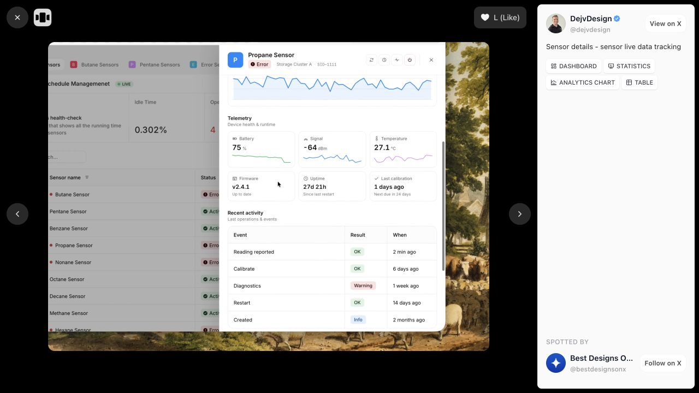

Open original reference ↗DejvDesign · @dejvdesign
Keep evidence and its inspector together
Refine existing inspector
A sensor table stays visible behind a detail sheet containing a chart, measurements, and recent activity.
- 01At wide widths, offer a docked inspector beside the chart and ledger. Keep the selected row, filters, and scroll position visible. Use the existing overlay on constrained widths.
- 02Make a finding open its exact failure interval or trade. Update the chart highlight, row selection, and inspector heading together. Preserve the existing Selected by agent attribution.
- 03Add previous and next evidence controls that respect the filtered result set. Closing the inspector returns focus to its opening row.
- 04Add a run-scoped selection link for returning to evidence. Resolve case access before selection and never create a public report merely because someone copies a link.
What to leave out and where to implement
Do not copy the scenic background, nested metric cards, or sensor branding. The sheet is an independent inspector; its contents can use dividers.
apps/web/src/components/tabs/EvidenceTab.vueapps/web/src/charts/CandlestickEvidenceChart.vueapps/web/src/stores/evidence.tsapps/web/src/router.ts